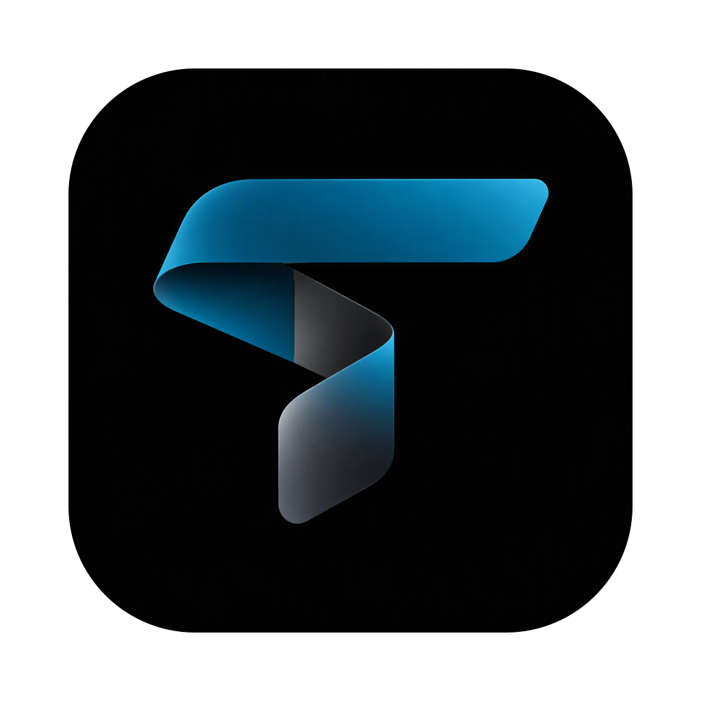

<!doctype html>
<html lang="en">
<head>
<meta charset="utf-8">
<title>Waiting on you</title>
<!-- The Waiting on you panel (panel.py): floats over other apps while Tether is away. Python calls render(state);
     the page posts {t: ready | size | act | close | drag | drag_end} as JSON text to the "tether" message handler. -->
<style>
:root { --fs-scale: 1; --font: -apple-system, BlinkMacSystemFont, "SF Pro Text", "Segoe UI", Roboto, Helvetica, Arial, sans-serif;
  --mono: "SF Mono", ui-monospace, Menlo, Consolas, monospace; --spring: cubic-bezier(.2, .9, .25, 1.15); --soft: cubic-bezier(.25, .8, .3, 1);
  --fs: calc(13px * var(--fs-scale)); --fs-meta: calc(12px * var(--fs-scale)); }
body.light {
  --text: #0E1519; --text-2: #34424B; --text-3: #53626B; --line: rgba(16, 30, 38, .09); --line-2: rgba(16, 30, 38, .16);
  --hover: rgba(16, 30, 38, .05); --sel: rgba(16, 30, 38, .08); --sunk: rgba(16, 30, 38, .05); --field: rgba(255, 255, 255, .7); --raised: rgba(255, 255, 255, .7);
  --accent: #0A5F74; --accent-fill: #0B6E86; --accent-hover: #095C70; --on-accent: #fff; --ok: #17663B; --warn: #8A5600; --danger: #B02F27;
  --pop-bg: rgba(250, 252, 253, .96); --pane-line: rgba(16, 30, 38, .10);
  --shadow-pop: 0 1px 0 rgba(255, 255, 255, .8) inset, 0 10px 24px rgba(30, 50, 60, .20), 0 1px 4px rgba(30, 50, 60, .10); color-scheme: light; }
body.dark {
  --text: #F1F5F7; --text-2: #C3CDD3; --text-3: #A6B2B9; --line: rgba(255, 255, 255, .08); --line-2: rgba(255, 255, 255, .14);
  --hover: rgba(255, 255, 255, .06); --sel: rgba(255, 255, 255, .10); --sunk: rgba(0, 0, 0, .28); --field: rgba(255, 255, 255, .06); --raised: rgba(255, 255, 255, .08);
  --accent: #6CCDE3; --accent-fill: #0B6E86; --accent-hover: #0D7D98; --on-accent: #fff; --ok: #62D49C; --warn: #F2B45A; --danger: #FF9D94;
  --pop-bg: rgba(26, 33, 39, .96); --pane-line: rgba(255, 255, 255, .12);
  --shadow-pop: 0 1px 0 rgba(255, 255, 255, .06) inset, 0 10px 24px rgba(0, 0, 0, .45), 0 1px 4px rgba(0, 0, 0, .3); color-scheme: dark; }
* { box-sizing: border-box; }
html, body { margin: 0; background: transparent; overflow: hidden; -webkit-font-smoothing: antialiased; }
body { font: var(--fs)/1.45 var(--font); color: var(--text); -webkit-user-select: none; user-select: none; cursor: default; }
#root { padding: 16px; }  /* panel.py M: room for the shadow */
.wp { width: 352px; background: var(--pop-bg); border: 1px solid var(--pane-line); border-radius: 14px; box-shadow: var(--shadow-pop);
  padding: 0 4px 4px; overflow-y: auto; overscroll-behavior: contain; }
.wp::-webkit-scrollbar { width: 6px; } .wp::-webkit-scrollbar-thumb { background: var(--line-2); border-radius: 3px; }
.in > * { animation: wp-in .5s var(--spring); }
@keyframes wp-in { from { opacity: 0; transform: translateY(-8px) scale(.97); } }
@media (prefers-reduced-motion: reduce) { .in > *, .leave { animation: none !important; } }
.wp-hd { position: sticky; top: 0; z-index: 1; display: flex; align-items: center; gap: 8px; padding: 9px 6px 7px 8px; margin: 0 -4px; padding-left: 12px; padding-right: 10px;
  background: var(--pop-bg); border-radius: 14px 14px 0 0; cursor: grab; }
.wp-hd img, .wp-fold img { width: 18px; height: 18px; border-radius: 5px; flex: none; }
.wp-hd .t { font-weight: 600; }
.wp-hd .n { color: var(--text-3); font-size: var(--fs-meta); }
.wp-hd .sp { flex: 1; }
.icb { width: 26px; height: 26px; border: 0; border-radius: 7px; background: none; color: var(--text-2); display: inline-flex; align-items: center; justify-content: center; cursor: pointer; padding: 0; flex: none; }
.icb:hover { background: var(--hover); color: var(--text); }
.icb svg { width: 15px; height: 15px; fill: none; stroke: currentColor; stroke-width: 1.8; stroke-linecap: round; stroke-linejoin: round; }
.wp-i { padding: 10px 10px 12px; border-top: 1px solid var(--line); }
.wp-ih { display: flex; align-items: center; gap: 7px; margin-bottom: 4px; min-width: 0; }
.dot { width: 7px; height: 7px; border-radius: 50%; background: var(--warn); flex: none; }
.dot.ok { background: var(--ok); } .dot.bad { background: var(--danger); }
.wp-ih b { font-weight: 600; white-space: nowrap; overflow: hidden; text-overflow: ellipsis; min-width: 0; flex: 0 0 auto; max-width: 58%; }
.wp-ih .k { color: var(--text-3); font-size: var(--fs-meta); flex: 0 1 auto; min-width: 0; white-space: nowrap; overflow: hidden; text-overflow: ellipsis; }
.wp-ih .ago { margin-left: auto; color: var(--text-3); font-size: var(--fs-meta); flex: none; }
.wp-ih .icb { width: 22px; height: 22px; }
.wp-q { color: var(--text-2); display: -webkit-box; -webkit-line-clamp: 4; -webkit-box-orient: vertical; overflow: hidden; -webkit-user-select: text; user-select: text; cursor: text; }
.wp pre { margin: 6px 0 0; font: var(--fs-meta)/1.5 var(--mono); white-space: pre-wrap; word-break: break-word; background: var(--sunk); color: var(--text);
  border: 1px solid var(--line); border-radius: 8px; padding: 7px 9px; max-height: 9.5em; overflow: auto; -webkit-user-select: text; user-select: text; }
.wp-acts { display: flex; flex-wrap: wrap; gap: 6px; margin-top: 9px; }
.btn { height: 28px; padding: 0 10px; display: inline-flex; align-items: center; gap: 6px; border-radius: 9px; border: 1px solid var(--line-2); background: var(--raised);
  color: var(--text); font: var(--fs-meta) var(--font); cursor: pointer; white-space: nowrap; max-width: 100%; overflow: hidden; text-overflow: ellipsis; }
.btn:hover { background: var(--sel); }
.btn:active { transform: scale(.96); }
.btn.primary { background: var(--accent-fill); border-color: transparent; color: var(--on-accent); }
.btn.primary:hover { background: var(--accent-hover); }
.btn.ghost { background: transparent; border-color: transparent; color: var(--text-2); }
.btn.ghost:hover { background: var(--hover); color: var(--text); }
.btn .nb { opacity: .75; font-variant-numeric: tabular-nums; }
.btn svg { width: 13px; height: 13px; fill: none; stroke: currentColor; stroke-width: 2; stroke-linecap: round; stroke-linejoin: round; flex: none; }
.wp-reply { display: flex; gap: 6px; margin-top: 8px; }
.wp-reply input { flex: 1; min-width: 0; height: 30px; padding: 0 10px; border-radius: 9px; border: 1px solid var(--line-2); background: var(--field); color: var(--text);
  font: var(--fs-meta) var(--font); outline: none; -webkit-user-select: text; user-select: text; }
.wp-reply input:focus { border-color: var(--accent); }
.wp-reply .icb { width: 30px; height: 30px; color: var(--accent); }
.wp-sent { display: flex; align-items: center; gap: 7px; color: var(--text-2); font-size: var(--fs-meta); }
.wp-sent b { color: var(--text); font-weight: 600; }
body.private .wp-q, body.private pre, body.private .wp-acts, body.private .wp-reply { filter: blur(5px); opacity: .7; transition: filter .25s var(--soft), opacity .25s; }
body.private .wp:hover .wp-q, body.private .wp:hover pre, body.private .wp:hover .wp-acts, body.private .wp:hover .wp-reply { filter: none; opacity: 1; }
.wp-fold { display: inline-flex; align-items: center; gap: 8px; max-width: 352px; padding: 6px 8px 6px 7px; font-size: var(--fs-meta); background: var(--pop-bg);
  border: 1px solid var(--pane-line); border-radius: 12px; box-shadow: var(--shadow-pop); cursor: grab; }
.wp-fold .nm { color: var(--text-3); white-space: nowrap; overflow: hidden; text-overflow: ellipsis; min-width: 0; }
.wp-fold svg { width: 14px; height: 14px; fill: none; stroke: var(--text-3); stroke-width: 1.8; stroke-linecap: round; stroke-linejoin: round; flex: none; }
body.dragging, body.dragging * { cursor: grabbing !important; }
</style>
</head>
<body class="dark">
<div id="root"></div>
<script>
const post = m => { try { window.webkit.messageHandlers.tether.postMessage(JSON.stringify(m)); } catch (e) { (window.sent ||= []).push(m); } };
const IC = {
  fold: '<svg viewBox="0 0 24 24"><path d="M6 15l6-6 6 6"/></svg>', down: '<svg viewBox="0 0 24 24"><path d="M6 9l6 6 6-6"/></svg>',
  open: '<svg viewBox="0 0 24 24"><path d="M14 5h5v5M19 5l-8 8M10 7H6a1 1 0 0 0-1 1v10a1 1 0 0 0 1 1h10a1 1 0 0 0 1-1v-4"/></svg>',
  close: '<svg viewBox="0 0 24 24"><path d="M7 7l10 10M17 7L7 17"/></svg>', send: '<svg viewBox="0 0 24 24"><path d="M5 12h13M13 6l6 6-6 6"/></svg>',
  yes: '<svg viewBox="0 0 24 24"><path d="M5 12.5l4.5 4.5L19 7.5"/></svg>', no: '<svg viewBox="0 0 24 24"><path d="M7 7l10 10M17 7L7 17"/></svg>',
  pen: '<svg viewBox="0 0 24 24"><path d="M5 19l1-4 10-10 3 3-10 10-4 1z"/></svg>',
};
const esc = s => String(s ?? "").replace(/[&<>"']/g, c => ({ "&": "&amp;", "<": "&lt;", ">": "&gt;", '"': "&quot;", "'": "&#39;" }[c]));
const ago = ms => { const s = Math.max(0, (Date.now() - ms) / 1000); return s < 60 ? "now" : s < 3600 ? Math.floor(s / 60) + "m" : s < 86400 ? Math.floor(s / 3600) + "h" : Math.floor(s / 86400) + "d"; };
const root = document.getElementById("root");
let st = { items: [] }, fold = null, known = new Set(), typed = {}, sent = new Map();  // sent: id -> what you did, shown for a moment

window.render = s => {
  const ids = s.items.map(x => x.id), fresh = ids.some(i => !known.has(i));
  if (fold === null || fresh) fold = s.start === "folded";
  known = new Set(ids);
  st = s;
  document.body.className = s.theme === "light" ? "light" : "dark";
  document.body.classList.toggle("private", !!s.private);
  const r = document.documentElement.style;
  r.setProperty("--fs-scale", String(s.scale || 1));
  if (s.accent) { r.setProperty("--accent-fill", s.accent); r.setProperty("--accent-hover", s.accent); } else { r.removeProperty("--accent-fill"); r.removeProperty("--accent-hover"); }
  draw();
};
window.entered = () => { root.classList.remove("in"); void root.offsetWidth; root.classList.add("in"); };

const sentHtml = d => `<div class="wp-sent"><span class="dot ok"></span>${esc(d.what)}${d.title ? ` · <b>${esc(d.title)}</b>` : ""}</div>`;
function rowHtml(x) {
  const done = sent.get(x.id);
  const head = `<div class="wp-ih"><span class="dot ${x.cat === "job" ? "bad" : x.cat === "done" ? "ok" : ""}"></span><b>${esc(x.title)}</b><span class="k">${esc(x.kind)}</span><span class="ago">${ago(x.at)}</span>
    <button class="icb" title="Open chat" data-act="open">${IC.open}</button></div>`;
  if (done) return `<div class="wp-i" data-id="${esc(x.id)}">${sentHtml(done)}</div>`;
  const btns = (x.buttons || []).map((b, i) => `<button class="btn ${b.primary ? "primary" : b.ghost ? "ghost" : ""}" data-act="${esc(b.act)}" data-i="${i}">${b.icon && IC[b.icon] ? IC[b.icon] : ""}${b.n ? `<span class="nb">${esc(b.n)}</span>` : ""}<span>${esc(b.label)}</span></button>`).join("");
  return `<div class="wp-i" data-id="${esc(x.id)}">${head}<div class="wp-q">${esc(x.text)}</div>${x.detail ? `<pre>${esc(x.detail)}</pre>` : ""}
    ${btns ? `<div class="wp-acts">${btns}</div>` : ""}
    ${x.reply ? `<div class="wp-reply"><input placeholder="Reply…" data-reply spellcheck="true"><button class="icb" title="Send" data-act="reply">${IC.send}</button></div>` : ""}</div>`;
}
function draw() {
  // a redraw while you type keeps the cursor in the same Reply box; if that box is gone, the keyboard goes back
  const fa = document.activeElement, typingIn = fa?.matches?.("[data-reply]") ? fa.closest(".wp-i")?.dataset.id : null, caret = typingIn ? fa.selectionStart : 0;
  const items = st.items.slice();
  for (const [id, label] of sent) if (!items.some(x => x.id === id)) items.push({ id, title: "", kind: "", at: Date.now(), gone: true });
  const n = st.items.filter(x => !sent.has(x.id)).length;
  if (fold) {
    const first = st.items.find(x => !sent.has(x.id)) || st.items[0] || {};
    root.innerHTML = `<div class="wp-fold" data-unfold><span class="dot"></span><span>${n || st.items.length} waiting</span><span class="nm">${esc(first.title || "")}</span>${IC.down}</div>`;
  } else {
    root.innerHTML = `<div class="wp" style="max-height:${Math.max(160, (st.max_h || 700) - 32)}px"><div class="wp-hd"><span class="t">Waiting on you</span><span class="n">${n || ""}</span><span class="sp"></span>
      <button class="icb" title="Fold" data-act="fold">${IC.fold}</button><button class="icb" title="Close" data-act="close">${IC.close}</button></div>${items.map(x => x.gone ? `<div class="wp-i">${sentHtml(sent.get(x.id))}</div>` : rowHtml(x)).join("")}</div>`;
    root.querySelectorAll("[data-reply]").forEach(i => { const id = i.closest(".wp-i").dataset.id; i.value = typed[id] || ""; i.oninput = () => { typed[id] = i.value; }; i.onkeydown = e => { if (e.key === "Enter" && i.value.trim()) act(i.closest(".wp-i"), "reply"); if (e.key === "Escape") i.blur(); }; });
  }
  if (typingIn) {
    const again = root.querySelector(`.wp-i[data-id="${CSS.escape(typingIn)}"] [data-reply]`);
    if (again) { again.focus(); again.setSelectionRange(caret, caret); } else post({ t: "key", on: false });
  }
  size();
}
let lastH = 0;
function size() { const c = root.firstElementChild; const h = c ? Math.ceil(c.getBoundingClientRect().height) : 0; if (h && h !== lastH) { lastH = h; post({ t: "size", h }); } }
new ResizeObserver(size).observe(root);
setInterval(() => root.querySelectorAll(".wp-i[data-id]").forEach(r => { const x = st.items.find(i => i.id === r.dataset.id), a = r.querySelector(".ago"); if (x && a) a.textContent = ago(x.at); }), 30000);

const DONE = { allow: "Allowed", always: "Allowed", deny: "Denied", send: "Sent", dismiss: "Dismissed", seen: "", say: "Sent", reply: "Sent" };
function act(row, a, i) {
  const x = st.items.find(z => z.id === row?.dataset.id);
  if (!x) return;
  if (a === "open") return post({ t: "act", id: x.id, sid: x.sid, act: "open" });
  const b = i != null ? (x.buttons || [])[i] : null;
  let text = b?.text || "";
  if (a === "reply") { text = (typed[x.id] || "").trim(); if (!text) return; a = "say"; }
  post({ t: "act", id: x.id, sid: x.sid, act: b?.act || a, text });
  if (a === "edit") return;  // Tether comes forward with the text in its message box
  delete typed[x.id];
  const what = DONE[b?.act || a];
  if (what === "") return;  // Seen: the row just goes
  sent.set(x.id, { what: what || "Sent", title: x.title });
  draw();
  setTimeout(() => { sent.delete(x.id); draw(); }, 1400);
}
root.addEventListener("click", e => {
  if (moved) { moved = false; return; }
  if (e.target.closest("[data-unfold]")) { fold = false; draw(); return; }
  const t = e.target.closest("[data-act]"); if (!t) return;
  const a = t.dataset.act;
  if (a === "fold") { fold = true; draw(); return; }
  if (a === "close") { post({ t: "close" }); return; }
  act(t.closest(".wp-i"), a, t.dataset.i != null ? +t.dataset.i : null);
});
// drag by the top line or the folded bar; the window moves, so track the pointer on the screen
let drag = null, moved = false;
root.addEventListener("pointerdown", e => { if (e.target.closest("[data-reply]")) post({ t: "key", on: true }); }, true);
root.addEventListener("focusout", e => { if (e.target.matches?.("[data-reply]")) post({ t: "key", on: false }); });
root.addEventListener("pointerdown", e => {
  if (!e.target.closest(".wp-hd, .wp-fold") || e.target.closest(".wp-hd button")) return;
  drag = { x: e.screenX, y: e.screenY, x0: e.screenX, y0: e.screenY }; moved = false;
  e.target.setPointerCapture?.(e.pointerId);
});
addEventListener("pointermove", e => {
  if (!drag) return;
  if (!moved && Math.hypot(e.screenX - drag.x0, e.screenY - drag.y0) < 4) return;
  moved = true; document.body.classList.add("dragging");
  post({ t: "drag", dx: e.screenX - drag.x, dy: e.screenY - drag.y });
  drag.x = e.screenX; drag.y = e.screenY;
});
addEventListener("pointerup", () => { if (!drag) return; drag = null; document.body.classList.remove("dragging"); if (moved) post({ t: "drag_end" }); });
addEventListener("keydown", e => { if (e.key === "Escape" && !e.target.closest("input")) { fold = true; draw(); } });
post({ t: "ready" });
</script>
</body>
</html>
